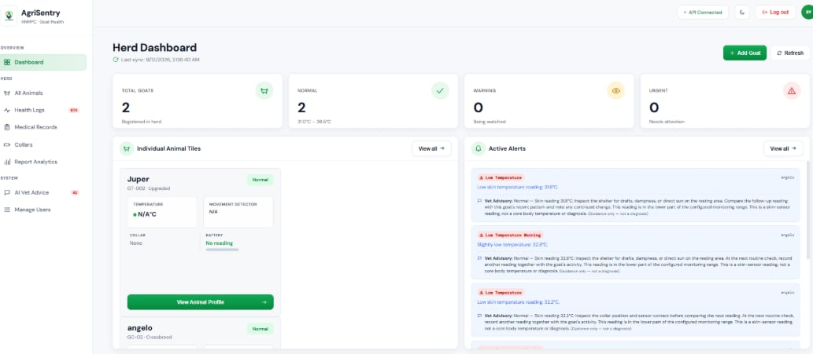
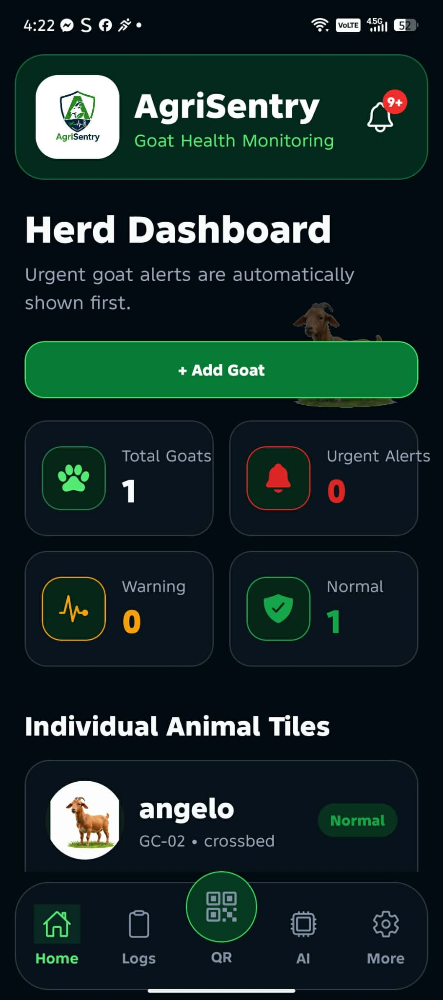
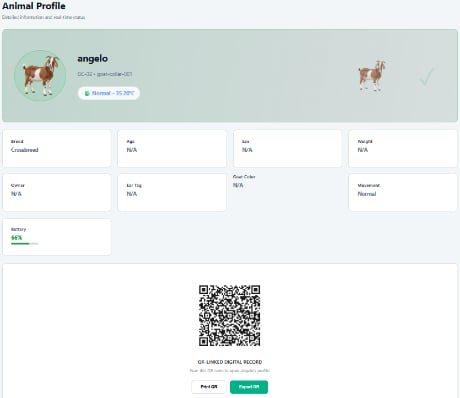
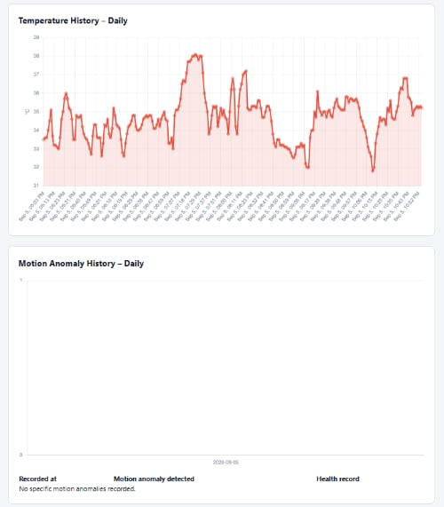
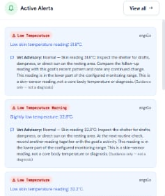
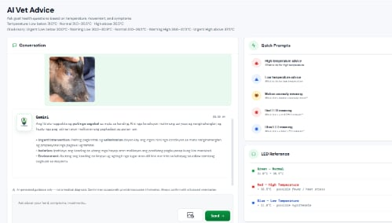

Smart Collar Monitoring
DS18B20 neck skin-surface temperature sensing with MPU6050-based movement and orientation monitoring.
AgriSentry is an IoT-based smart collar system for real-time caprine health monitoring using neck skin-surface temperature and motion anomaly detection.
Periodic visual checks, numbered ear tags, and paper records can make it difficult to spot unusual temperature or movement early and retrieve complete health information quickly.
Animal-specific sensing, centralized monitoring, alerts, QR-linked records, and AI-assisted guidance support faster and more organized decision-making.
AgriSentry combines a wearable smart collar, LoRaWAN communication, a cloud-hosted Laravel and MySQL platform, and responsive web/mobile interfaces. The collar captures neck skin-surface temperature and movement data while the platform organizes monitoring information, alerts, goat profiles, health records, and advisory information.
It is designed as an early-warning and decision-support tool. AgriSentry does not diagnose disease, prescribe medication, replace rectal/core temperature measurement, or replace consultation with a licensed veterinarian.
Designed to make monitoring information easier to collect, review, and act on.
DS18B20 neck skin-surface temperature sensing with MPU6050-based movement and orientation monitoring.
Differentiated alerts highlight configured abnormal temperature, motion, and collar conditions for closer attention.
Collar telemetry is sent to a Heltec HT-M7603 gateway and forwarded through the available internet connection.
Review current readings, goat status, monitoring history, collar status, alerts, and recent health information.
Each registered goat can be associated with a QR code for faster retrieval of its authorized profile and records.
Store newly recorded vaccinations, diagnoses, medications, treatments, remarks, and related health information.
Gemini 2.5 Flash provides advisory suggestions for human review based on available monitoring and recorded information.
Functions and records are limited according to assigned user responsibilities and authorization.
Explore actual screenshots of the AgriSentry web and mobile application.






Manages user access, permissions, system records, and system-level settings.
Maintains goat profiles and health information and reviews monitoring data and records.
Observes goat conditions, receives alerts, checks monitoring information, and accesses authorized records.
Can use exported or printed histories, trends, alerts, and recorded medical information as supporting context during consultation.
Authorized users need valid login credentials because goat records and monitoring functions are protected by role-based access.
Edit this URL in index.html before deployment.